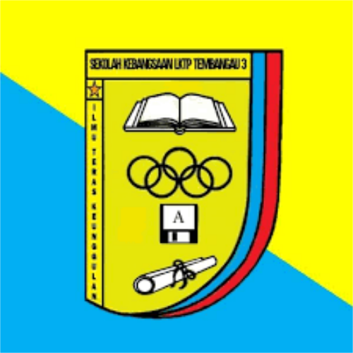
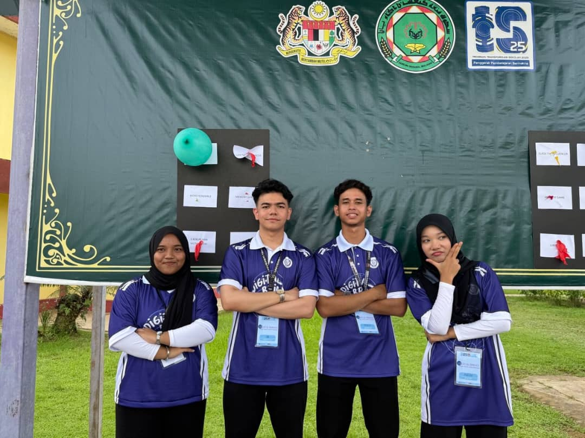
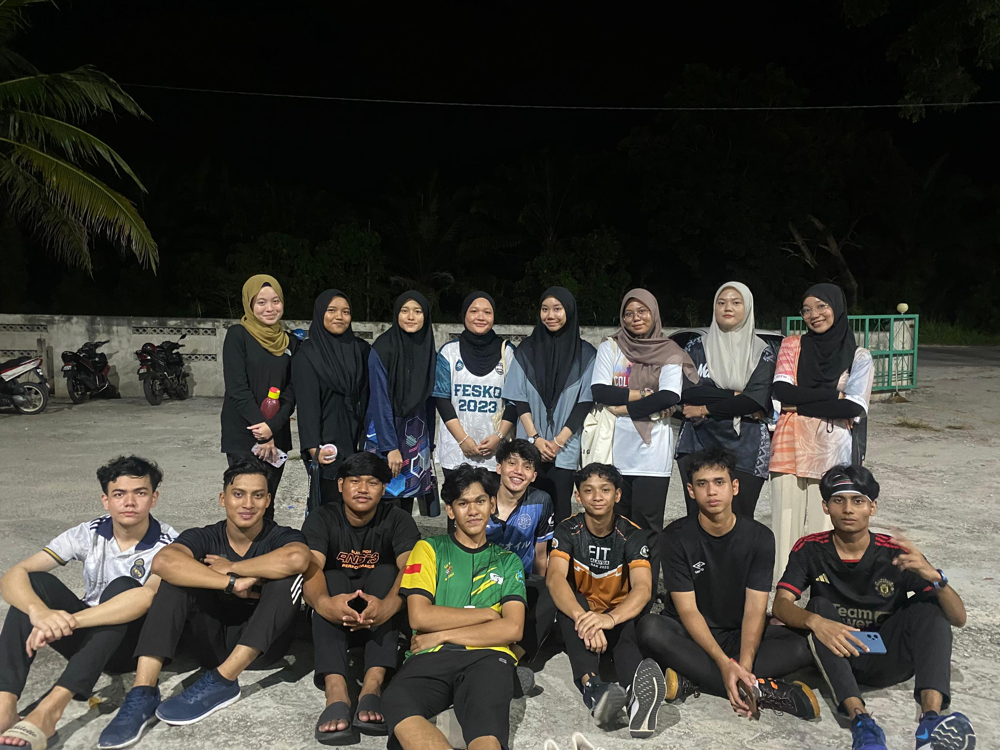
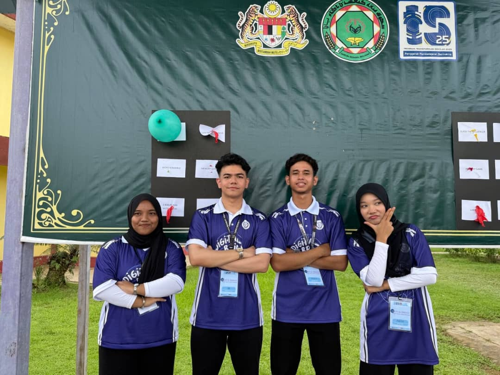
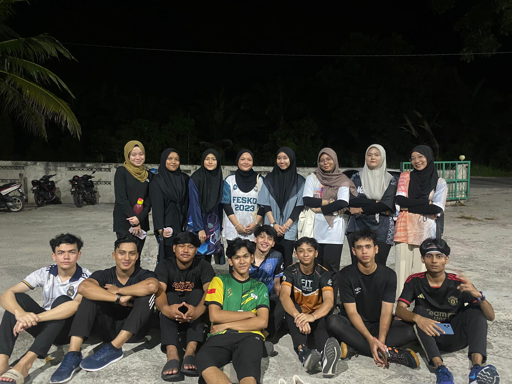

Primary School
2011 - 2015Attended SK LKTP Tembangau 3, where I built a strong foundation in basic education and developed a love for learning.

Attended SK LKTP Tembangau 3, where I built a strong foundation in basic education and developed a love for learning.
Studied at Sekolah Menengah Kebangsaan Agama Yan. Here, I discovered my passion for science and technology and excelled in various co-curricular activities.
Furthering my studies at Universiti Teknologi MARA (UiTM). This course equipped me with the skills and knowledge to manage information systems effectively.
 


